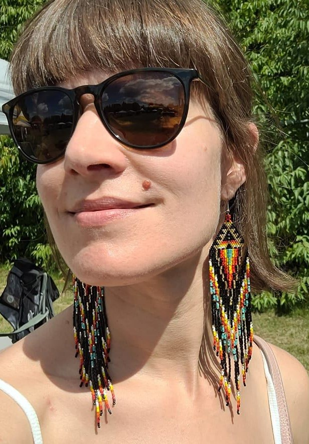
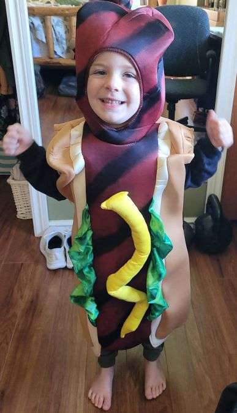
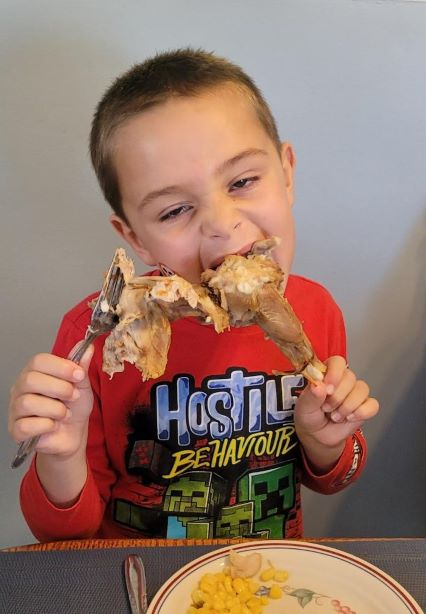
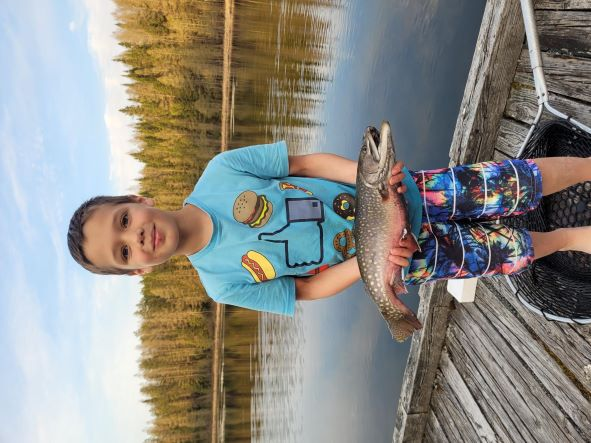

The Life and Times of

Janet Pratt
I have been a stay at home parent since 2014. In my previous life I worked as a Geomatics tech for MNRF. This summer I worked as a Park Ranger at Kap-Kig-iwan Provincial Park. This fall I started an upgrading program at Fleming College.
Being a parent can be challenging, it is good to find a balance with your time. I have included a
link
to a resource for balancing lifes demands. Here are some photos of my kids, they also help me keep it all in balance.
Reynolds (3)

My youngest son, Reynolds, turns 4 next month. Also, he is a hotdog
Merritt (6)

My middle son, Merritt, is outgoing and creative. Pictured here at Thanksgiving 2022
Rodney (8)

My eldest son is inquisitive and kind. He loves the outdoors.